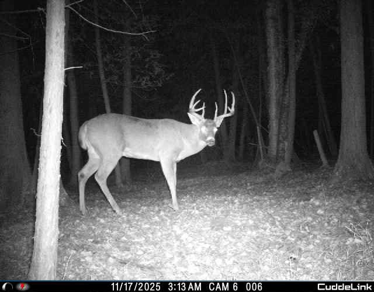
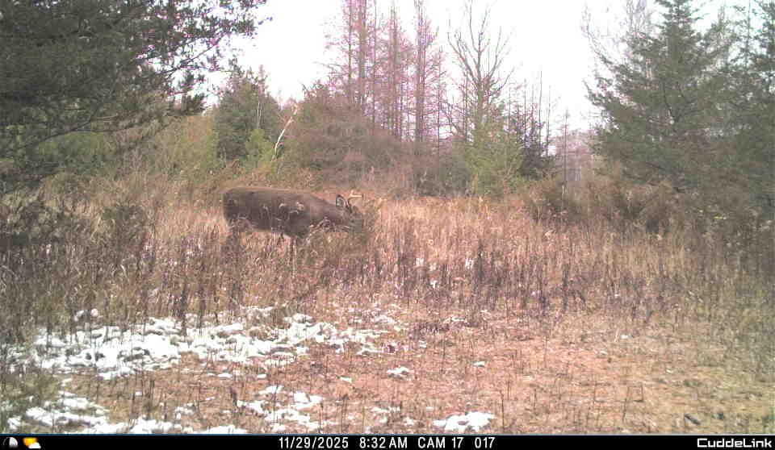
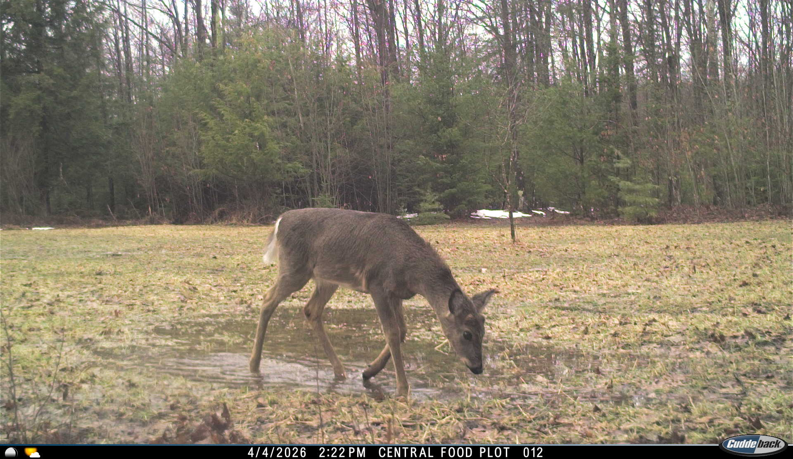

TrailCam Manager keeps all your trail cameras organized — GPS coordinates, battery status, deployment history, and offline navigation. Stand anywhere in the woods and find any camera, even with zero cell service.



Built for hunters who run multiple cameras across multiple properties. No guesswork, no spreadsheets.
Every active camera appears as a pin on a hybrid satellite map. Tap any pin to see camera details, direction it's facing, and how long it's been deployed. Works on iOS Maps offline basemaps.
A gold compass arrow rotates to point directly at any selected camera. Uses only your phone's GPS and magnetometer — no cell signal needed. Works deep in the woods, in a canyon, anywhere you have sky view.
Full deployment history for every camera and location. Instantly see which spots haven't had a camera in months, how long each camera has been sitting, and a full timeline of what was where and when.
Log the SD card size, battery type and count for each placement. Record when you last changed batteries — the app shows how many days ago and warns you when it's been over 90 days.
A simple hierarchy keeps everything organized — Properties → Locations → Placements — so you always know exactly what's where.
Create a Property for each piece of land. Under each property, add Locations — the specific spots where you hang cameras: a field edge, a creek crossing, a scrape.
Tap Deploy Camera at any location. Your GPS coordinates are grabbed the moment you open the form. Set the direction using the built-in compass picker or the 8-point manual picker.
The Map tab shows every active camera as a directional pin. Tap any pin for a callout showing the location, property, camera label, and direction. From there you can navigate to it or jump straight to its full history.
Tap Navigate on any map pin. A large gold arrow rotates in real time to point directly at the camera. Walk toward it. The distance counts down in feet or miles as you close in.
The History tab shows a full deployment timeline for every camera and location. The analytics card surfaces exactly which spots have gone uncovered — and for how long.
Yes — the GPS navigator uses only your phone's hardware (GPS satellite + compass magnetometer). No internet, no cell towers. It works the same way a standalone GPS unit does. You can also view cached map tiles and all your camera data offline. The app syncs changes to the cloud when you're back in range.
$4.99 one-time purchase. No subscription, no in-app purchases, no ads. Pay once, use it every season. Group sharing with hunting partners is planned for a future update and will be a free addition.
Any iPhone running iOS 17 or later. This covers iPhone XS and newer. The app is optimized for iPhone — iPad is not currently supported.
Yes. Your data is stored in a secure, encrypted database with row-level security — only your account can access your properties, locations, and placements. Your GPS coordinates are never shared or sold. See the Privacy Policy for full details.
Not yet — group sharing is planned for a future update. The planned feature will let you share a property with hunting partners at different permission levels (owner, member, viewer). For now, each account sees only its own data.
The app tracks placements, not just cameras. If you change the GPS coordinates or direction of a placement, it automatically closes the current record (marking today as the pull date) and opens a new one. That way you always have a full history of where each camera has been and for how long. Changes to notes, photos, battery info, or camera label update in place without creating a new record.
Yes. TrailCam Manager is brand-agnostic — it manages the location and metadata of any physical trail camera. Cuddeback, Reconyx, Browning, Stealth Cam, Moultrie, Bushnell — all work the same way. The app doesn't pull images from cameras; it tracks where they are and how they're equipped.
Found a bug? Have a question? Use the form or reach out directly.
Use this form to report a bug, request a feature, or ask a general question. We aim to respond within 2 business days.
For bug reports and feature requests, GitHub Issues is the fastest way to get a response and lets you track progress.